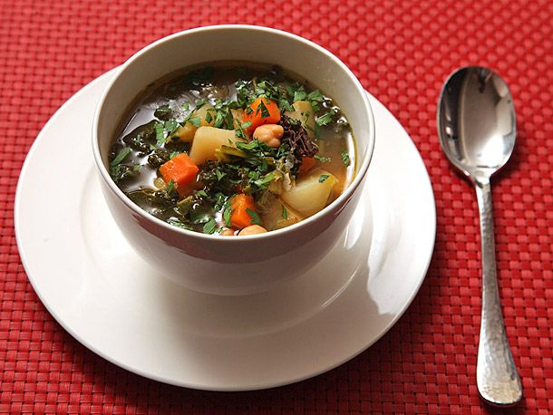
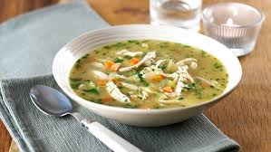

Chicken Soup
Delicious and comforting, this chicken soup recipe is perfect for cozy evenings.

Veg Manchow Soup
Spicy and tangy, this soup packs a punch with fresh vegetables and aromatic spices.

Mutton Bone Soup
A rich and hearty soup made from slow-cooked mutton bones, perfect for winter.

Hot and Sour
This classic soup balances spicy and tangy flavors, ideal for adventurous taste buds.

Chicken Sweet Corn Soup
Comforting and sweet, this soup is a favorite with a combination of chicken and corn.